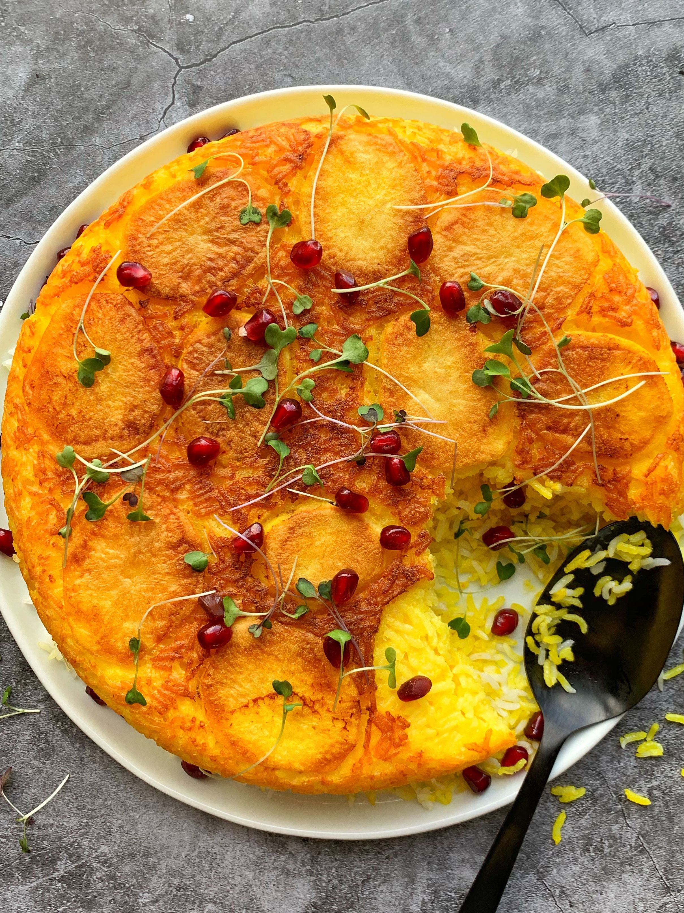

Persian Rice with Potato Tahdig

Description
Potatoes are cooked at the bottom of the rice in this traditional Persian rice dish.
Ingredients
- 2 cups basmati rice
- 1 teaspoon salt
- 2 tablespoons cooking oil
- 1 potato, sliced into 1/4-inch rounds
Steps
- Rinse and drain rice 2 times.
- Bring a large pot of water to a boil. Add rice and salt; cook for 6 minutes. Drain in a colander. Rinse rice and drain again.
- Put oil in the bottom of the pot and place potato slices in a single layer over top. Pour cooked rice on top of potato slices, cover, and cook over low heat until rice and potatoes are tender, 20 to 30 minutes.
- Invert carefully onto a serving plate so sliced potatoes are on top of rice.